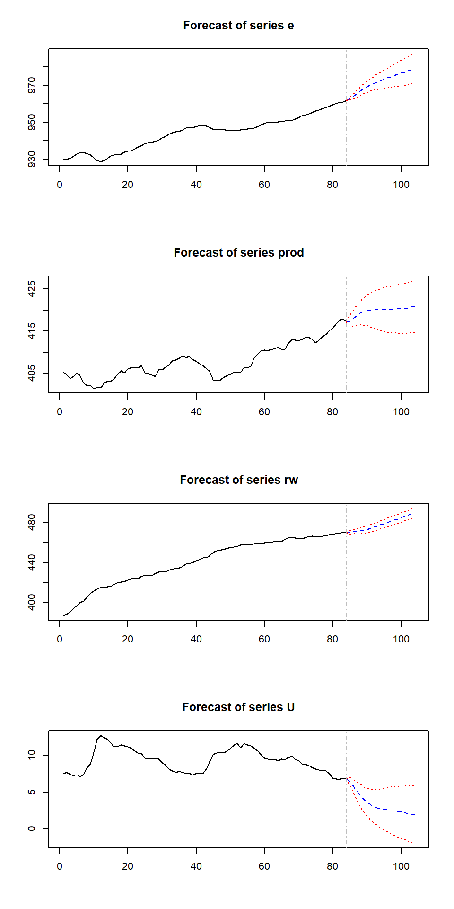

BVARについて
おはこんばんにちは。日次GDP推計を休日に進めているのですが、今日は少し勉強編でBVARについての記事を書きたいと思います。このBVARはFRBアトランタ連銀のGDPNowでも使用されていることから、日次GDP推計との親和性も高いと思われます。そもそも、時系列でアウトサンプルの予測精度を上げたいということになると真っ先に思いつくのがBVARです。Doan, Litterman and Sims(1984)で提案されたこのモデルは予測精度が良いので、非常に有効な手段になると思われます。BVARはBayesian Vector Autoregressionの略で、ベクトル自己回帰モデル（VAR）の派生版です。VARとネットで調べるとまずValue at Risk（VaR）が出てくると思いますが、それとは違います。よく見るとaが小文字になっていることに気づくかと思います。
さて、BVARの説明をこれから行おうとするのですが、その前にまず基本的なVARの説明からしたいと思います。ただし、歴史的な背景（大型マクロ計量モデルからの経緯など）には触れません。あくまで、BVARを説明するうえで必要な知識について触れたいと思います。
1. Unrestricted VARについて
まず、注意点を一点。この投稿では、もっとも基本的なVARのことをUnrestricted VAR（UVAR）と呼ぶことにします。UVARはSims(1980)の論文が有名です。1
このモデルには、理論的な基礎づけは原則ありません。あくまで実証的なモデルです。UVARは一般系は以下のような形をしています。
\[
Y_{t} = A_{0} + A_{1}Y_{t-1} + ... + A_{K}Y_{t-K} + U_{t}, ~~ U_{t} ～ N(0,\Omega)
\]
\[
Y_{t} = \left(
\begin{array}{cccc}
y_{1,t} \\
y_{2,t} \\
\vdots \\
y_{J,t} \\
\end{array}
\right),
A_{0} = \left(
\begin{array}{cccc}
a_{10} \\
a_{20} \\
\vdots \\
a_{J0} \\
\end{array}
\right),
A_{k} = \left(
\begin{array}{cccc}
a_{11,k} & a_{12,k} & \ldots & a_{1J,k} \\
a_{21,k} & a_{22,k} & \ldots & a_{2J,k} \\
\vdots & \vdots & \ddots & \vdots \\
a_{J1,k} & a_{J2,k} & \ldots & a_{JJ,k}
\end{array}
\right),
U_{t} = \left(
\begin{array}{cccc}
u_{1,t} \\
u_{2,t} \\
\vdots \\
u_{J,t} \\
\end{array}
\right)
\]
ここで、\(t\)は時点、\(J\)は変数の数、\(K\)はラグ数を表しています。上式を見ると、UVARは自己回帰＋他変数のラグでt期の変数\(y_{j,t}\)を説明しようとするモデルであると言えます。しばしば、経済の実証分析で使用され、インサンプルの当てはまりが良いことも知られています（GDP、消費、投資、金利、マネーサプライの５変数VARで金融政策の波及経路を分析したり･･･）。推定するパラメータの個数は、回帰式1本だけでJK+1個（定数項込み）の係数を含むので、J本になればJ(JK+1)個になります。また、\(\Omega\)がJ(J+1)/2個のパラメータを持っているので、合計J(JK+1)+J(J+1)/2個のパラメータを推定することになり、かなりパラメータ数が多い印象です（これは後々重要になってきます）。具体的な推計方法ですが、UVARは同時方程式体系ではないのでそこまで面倒ではありません。UVAR自体はSeemingly Unrestricted Regression Equation（SUR）の一種でそれぞれの方程式は誤差項の相関を通じて関係してはいますが（\(\Omega\)の部分）、全ての回帰式が同じ説明変数を持つため、各方程式を最小二乗法（OLS）によって推定するだけで良いことが知られています。
この事実を説明してみましょう（BVARが気になる方は読み飛ばしてもらって構いません）。説明のために今、UVARをSURの一般系に書き直します。上式はt期のVAR(K)システムですが、UVARを推定する際はこれらJ本の方程式がサンプル数Tセット分存在するので、実際のシステム体系は以下のようになります。
\[ \left( \begin{array}{cccc} Y_{1} \\ Y_{2} \\ \vdots \\ Y_{J} \\ \end{array} \right) = \left( \begin{array}{cccc} X_{1} & 0 & \ldots & 0 \\ 0 & X_{2} & \ldots & 0 \\ \vdots & \vdots & \ddots & \vdots \\ 0 & 0 & \ldots & X_{J} \end{array} \right) \left( \begin{array}{cccc} A_{1} \\ A_{2} \\ \vdots \\ A_{J} \\ \end{array} \right) + \left( \begin{array}{cccc} U_{1} \\ U_{2} \\ \vdots \\ U_{J} \\ \end{array} \right) = \overline{X}A + U (1式) \] ここで、
\[
Y_{j} = \left(
\begin{array}{cccc}
y_{t,j} \\
y_{t+1,j} \\
\vdots \\
y_{T,j} \\
\end{array}
\right) ,
X_{j} = X = \left(
\begin{array}{cccc}
1 & y_{t-1,1} & \ldots & y_{t-K,1} & \ldots & y_{t-K,J} \\
1 & y_{t,1} & \ldots & y_{t-K+1,1} & \ldots & y_{t-K+1,J} \\
\vdots & \vdots & \ldots & \ldots & \ddots & \vdots \\
1 & y_{T-1,1} & \ldots & y_{T-K,1} & \ldots & y_{T-K,J} \\
\end{array}
\right),
A_{j} = \left(
\begin{array}{cccc}
a_{00,j} \\
a_{11,j} \\
\vdots \\
a_{JK,j} \\
\end{array}
\right)
\]
です。上式とは違い、変数順で並べられていることに注意してください（つまり、各方程式を並べる優先順位は１番目にj、２番目にtとなっている）。また、\(X_{j}\)が全ての変数\(j\)について等しいことに注目してください（jに依存していません、VARなので当たり前ですが）。これが後々非常に重要になってきます。\(U\)の分散共分散行列は
\[ E[UU'|X_{1}, X_{2},..,X_{J}] = \Omega = \left( \begin{array}{cccc} \sigma_{11}I & \sigma_{12}I & \ldots & \sigma_{1J}I \\ \sigma_{21}I & \sigma_{22}I & \ldots & \sigma_{2J}I \\ \vdots & \vdots & \ddots & \vdots \\ \sigma_{J1}I & \sigma_{J2}I & \ldots & \sigma_{JJ}I \\ \end{array} \right) \]
となっており、それぞれの変数は誤差項の相関を通じて関係しています（ただし、同じ変数内の異なる時点間の相関はないと仮定します）。このような場合、一般化最小二乗法（GLS）を用いて推計を行うことになりますが、これら方程式体系において説明変数が同じであるならば、GLS推定量とOLS推定量は同値になります。それを確かめてみましょう。上述した方程式体系(1)のGLS推定量は以下になります（参考）。
\[ A_{GLS} = (\overline{X}'\Omega^{-1}\overline{X})^{-1}\overline{X}'\Omega^{-1}Y = (\overline{X}'(\Sigma^{-1}\otimes I)\overline{X})^{-1}\overline{X}'(\Sigma^{-1}\otimes I)Y \]
ここで、\(\Sigma\)は誤差項の分散共分散行列のうち、スカラーである分散、共分散を取り出した行列です。先ほど確認したように、\(X_{1}=X_{2}=...=X_{J}=X\)なので\(\overline{X}=I \otimes X\)であり、その転置も\(\overline{X}'=I \otimes X\)となります。よって、このの性質を用いると、
\[ \begin{eqnarray} A_{GLS} &=& [(I \otimes X')(\Sigma^{-1}\otimes I)(I \otimes X)]^{-1}(I \otimes X')(\Sigma^{-1}\otimes I)Y \\ &=& [(\Sigma^{-1}\otimes X')(I \otimes X)]^{-1}(\Sigma^{-1}\otimes X')y \\ &=& (\Sigma^{-1}\otimes(X'X))^{-1}(\Sigma^{-1}\otimes X')y \\ &=& (I \otimes (X'X)^{-1}X')y \\ &=& (\overline{X}'\overline{X})^{-1}\overline{X}'Y \\ &=& \left( \begin{array}{cccc} (X'X)^{-1}X' & 0 & \ldots & 0 \\ 0 & (X'X)^{-1}X' & \ldots & 0 \\ \vdots & \vdots & \ddots & \vdots \\ 0 & 0 & \ldots & (X'X)^{-1}X' \end{array} \right) \left( \begin{array}{cccc} Y_{1} \\ Y_{2} \\ \vdots \\ Y_{J} \\ \end{array} \right)\\ &=& \left( \begin{array}{cccc} (X'X)^{-1}X'Y_{1} \\ (X'X)^{-1}X'Y_{2} \\ \vdots \\ (X'X)^{-1}X'Y_{J} \\ \end{array} \right) \\ &=& \left( \begin{array}{cccc} A_{1,OLS} \\ A_{2,OLS} \\ \vdots \\ A_{J,OLS} \\ \end{array} \right) \end{eqnarray} \]
となり、各経済変数の方程式を別個にOLS推計していけばよいことがわかります。
OLS推定に際し、VARの次数Kの選択を選択する必要がありますが、次数KはAIC（BIC）を評価軸に探索的に決定します。つまり、いろいろな値をKに設定し、OLS推計を行い、計算されたVAR(K)のAIC(BIC)のうちで最も値が大きいモデルの次数を真のモデルの次数Kとして採用するということです。RにもVARselect()という関数があり、引数にラグの探索最大数とデータを渡すことで最適な次数を計算してくれます（便利）。
このようにUVARはOLS推計で各変数間の相互依存関係をデータから推計できる手軽な手法です。私が知っている分野ですと財政政策乗数の推計に使用されていました。GDP、消費、投資、政府支出の４変数でVARを推定し、推定したVARでインパルス応答を見ることで１単位の財政支出の増加がGDP等に与える影響を定量的にシミュレートすることができたりします（指導教官が論文を書いてました）。そもそも私の専門のDSGEも誘導系に書き直せばVAR形式になり、インパルス応答などは基本的に一緒です。また、経済変数は慣性が強いので（特に我が国の場合）、インサンプルのモデルの当てはまりもいいです。ただし、あくまでインサンプルです。アウトサンプルの当てはまりはそれほど良い印象はありません。なぜなら、推定パラメータが多すぎるからです。UVARの予測に関する問題点はover-parametrizationです。例えば、先ほどの４変数UVARでラグが６期だったとすると、推定すべきパラメータは３１個になります。よって、データ数にもよりますが、パラメータ数がデータ数に近づくとインサンプルの補間に近づき、過学習を引き起こす危険性があります。日次GDP推計は大量の変数を使用するのでこの問題は非常に致命的になります。BVARはこの問題を解決することに主眼を置いています。
2. BVARについて
UVARの問題点はover-parametrizationであると述べました。BVARはこの問題を防ぐために不必要な説明変数（のパラメータ）をそぎ落とそうとします。ただ、不要なパラメータを推定する前に０と仮置き（カリブレート）するのではなく、１階の自己に関わるパラメータは１周り、その他変数のパラメータは０周りに正規分布するという形の制約を与えます。このモデルの最大の仮定は「各経済変数は多かれ少なかれドリフト付き１階のランダムウォークに従う」というものであり、上述したような事前分布を先験的に与えた上で推定を行うのです。砕けた言い方をすると、BVARの考え方は「経済変数の挙動は基本はランダムウォークだけど他変数のラグに予測力向上に資するものがあればそれも取り入れるよ」というものなんです。さて、前置きが長くなりましたが、具体的な説明に移りたいと思います。
具体的な推定方法（カルマンフィルタ）
上述した事前分布に加えて、BVARがUVARと異なる点はパラメータがtime-varyingであるということです。なんとなく、パラメータがずっと固定よりもサンプルが増えるたびにその値が更新されるほうが予測精度が上がりそうですよね（笑）。推定手法としてはUVARの時のようにOLSをそれぞれにかけることはせず、カルマンフィルタ と呼ばれるアルゴリズムを用いて推定を行います。BVARは以下のような状態空間モデルとして定義されます（各ベクトル、行列の次元はUVAR時と同じです）。
\[
Y_{t} = X_{t}B_{t} + u_{t} \\
B_{t} = \Phi B_{t-1} + \epsilon_{t} \\
B_{t} = \left(
\begin{array}{cccc}
\beta_{00,t} \\
\beta_{11,t} \\
\vdots \\
\beta_{JK,t} \\
\end{array}
\right),
\Phi = \left(
\begin{array}{cccc}
\phi_{00} & 0 & \ldots & 0 \\
0 & \phi_{11} & \ldots & 0 \\
\vdots & \vdots & \ddots & \vdots \\
0 & 0 & \ldots & \phi_{JK}
\end{array}
\right),
u_{t} = \left(
\begin{array}{cccc}
u_{1,t} \\
u_{2,t} \\
\vdots \\
u_{J,t} \\
\end{array}
\right),
\epsilon_{t} = \left(
\begin{array}{cccc}
\epsilon_{00,t} \\
\epsilon_{11,t} \\
\vdots \\
\epsilon_{JK,t} \\
\end{array}
\right)
\]
状態空間モデルは観測可能なデータ（ex.経済統計）を用いて、観測不可能なデータ（ex.リスクプレミアムや限界消費性向等）を推定します。観測可能なデータと不可能なデータを関連付ける方程式を観測方程式、観測不可能なデータの挙動をモデル化した方程式を遷移方程式と呼びます。ここでは、1本目が観測方程式、2本目が遷移方程式となります。御覧の通り、観測方程式は通常のVARの形をしている一方、遷移方程式はAR(1)となっており、これによってパラメータ\(B_{t}\)は過去の値を引きずりながら\(\epsilon_{t}\)によって確率的に変動します。\(\Phi\)は自己回帰係数です。誤差項\(u_{t}\)と\(\epsilon_{t}\)は平均０の正規分布に従い、その分散は
\[ \begin{eqnarray} Var(u_{t}) &=& \sigma_{u}^{2} \\ Var(\epsilon_{t}) &=& \sigma_{\epsilon}^{2}R \end{eqnarray} \] で与えられます。ここで、\(\Phi,R,\sigma_{u}^{2},\sigma_{\epsilon}^{2}\)は既知であるとします。今、t-1期までのデータが入手可能であるとすると、そのデータをカルマンフィルタアルゴリズムで推定した\(B_{t-1|t-1}\)とその分散共分散行列\(P_{t-1|t-1}\)を用いて、t期の予想値を以下のように計算します。
\[ \begin{eqnarray} B_{t|t-1} &=& \Phi B_{t-1|t-1} \\ P_{t|t-1} &=& \Phi P_{t|t-1} \Phi' + \sigma_{\epsilon}^{2}R \end{eqnarray} \] 観測可能な変数の予測値はこの値を用いて計算します。
\[ \hat{Y_{t}} = X_{t} B_{t|t-1} \] 次にt期の観測値が得られると次の更新方程式を用いて\(B_{t|t}, P_{t|t}\)を計算します。
\[
\begin{eqnarray}
B_{t|t} &=& B_{t|t-1} + P_{t|t-1}X_{t}'(X_{t}P_{t|t-1}X_{t}' + \sigma_{u}^{2})^{-1}(Y_{t}-X_{t}B_{t|t-1}) \\
P_{t|t} &=& P_{t|t-1} + P_{t|t-1}X_{t}'(X_{t}P_{t|t-1}X_{t}' + \sigma_{u}^{2})^{-1}X_{t}P_{t|t-1}
\end{eqnarray}
\]
\(\sigma_{\epsilon}^{2}R = 0\)かつ\(\Phi = I\)の場合は逐次最小二乗法に一致します。要は入手できるサンプル増えるたびにOLSをやり直していくことと同値だということです。こうして推計を行うのがBVARなのですが、カルマンフィルタは漸化式なので初期値\(B_{0|0}, P_{0|0}\)を決めてやる必要があります。BVARの２つ目の特徴は初期値の計算に混合推定法を用いているところであり、ここに前述した事前分布が関係してきます。
カルマンフィルタの初期値をどのようにきめるか
初期値\(B_{0|0}, P_{0|0}\)をどうやって計算するのかを考えた際にすぐ思いつく方法としては、カルマンフィルタのスタート地点tの前に、初期値推計期間をある程度用意し、\(Y = XB + \epsilon\)で\(B_{0|0}, P_{0|0}\)を推定する方法があります。つまり、観測方程式をGLS推計し、そのパラメータを初期値とする方法です。その際のGLS推定量は
\[ \hat{B} = (X'V^{-1}X)^{-1}X'V^{-1}Y \]
です。これでもいいんですが、これではただ時変パラメータを推計しているだけで先ほど述べたover-parametrizationの問題にはアプローチできていません。そこで、ここではパラメータ\(B\)に対してなにか先験的な情報が得られているとしましょう。つまり、先述した「経済変数の挙動は基本はランダムウォークだけど他変数のラグに予測力向上に資するものがあればそれも取り入れるよ」という予想です。これを定式化してみましょう。つまり、パラメータ\(B\)に対して以下の制約式を課します。
\[ r = RB + \nu \] ここで、\(E(\nu) = 0,Var(\nu) = V_{0}\)です。また、\(r\)は\(RB\)の予想値であり、\(V_{0}\)はその予想値の周りでのばらつきを表しています。取っ付きにくいかもしれませんが、\(r\)は１階自己回帰係数に関わる部分は1、それ以外は0となるベクトルで、\(R\)は単位行列\(I\)だと思ってもらえばいいです。つまり、
\[ \begin{eqnarray} \left( \begin{array}{cccc} 0 \\ 1 \\ 0 \\ \vdots \\ 1 \\ \vdots \\ 0 \\ \end{array} \right) &=& \left( \begin{array}{cccc} \beta_{0,1}^{1} \\ \beta_{1,1}^{1} \\ \beta_{2,1}^{1} \\ \vdots \\ \beta_{j,1}^{j} \\ \vdots \\ \beta_{J,K}^{J} \\ \end{array} \right) + \left( \begin{array}{cccc} \nu_{0,1}^{1} \\ \nu_{1,1}^{1} \\ \nu_{2,1}^{1} \\ \vdots \\ \nu_{j,1}^{j} \\ \vdots \\ \nu_{J,K}^{J} \\ \end{array} \right) \end{eqnarray} \] みたいな感じです。ここで\(\beta_{j,k}^{i}\)はi番目の方程式のj番目の変数のk次ラグにかかるパラメータを表しています。混合推定では、正規分布に従う観測値とこの事前分布が独立であるという仮定の下で観測方程式\(Y = XB + \epsilon\)と$ r = RB + $を以下のように組み合わせます。
\[ \left( \begin{array}{cccc} Y \\ r \end{array} \right) = \left( \begin{array}{cccc} X \\ R \end{array} \right)B + \left( \begin{array}{cccc} \epsilon \\ \nu \end{array} \right) \]
ここで、
\[ E\left( \begin{array}{cccc} \epsilon \\ \nu \end{array} \right) = 0 \\ Var\left( \begin{array}{cccc} \epsilon \\ \nu \end{array} \right) = \left( \begin{array}{cccc} \sigma^{2}V & 0 \\ 0 & V_{0} \\ \end{array} \right) \]
そして、このシステム体系をGLSで推計するのです。こうすることで、事前分布を考慮した初期値の推定を行うことができます。GLS推定量は以下のようになります。
\(\displaystyle \hat{B}_{M} = (\frac{1}{\sigma^{2}}X'V^{-1}X + R'V_{0}^{-1}R)^{-1}(\frac{1}{\sigma^{2}}X'V^{-1}y + R'V_{0}^{-1}r)\)
ご覧になればわかるように、GLS推定量は上記2本の連立方程式(実際には行列なので何本もありますが)それぞれのGLS推定量を按分したような推定量になります。ここで、\(\sigma^{2}\)は既知ではないので、いったんOLSで推計しその推定量を用います。問題は\(V_{0}\)の置き方です。\(V_{0}\)の各要素を小さくとれば、事前分布に整合的な推定量が得られます（つまり、ランダムウォーク）。逆に、大きくとれば通常のGLS推定量に近づいていきます。Doan, Litternam and Sims (1984)では以下のように分散を置いています。
\[ \begin{eqnarray} \displaystyle Var(\beta_{j,k}^{j}) &=& \frac{\pi_{5}・\pi_{1}}{k・exp(\pi_{4}w_{i}^{i})} \\ \displaystyle Var(\beta_{j,k}^{i}) &=& \frac{\pi_{5}・\pi_{2}・\sigma_{i}^{2}}{k・exp(\pi_{4}w_{j}^{i})・\sigma_{j}^{2}} \\ Var(c^{i}) &=& \pi_{5}・\pi_{3}・\sigma_{i}^{2} \end{eqnarray} \]
ここで、\(\beta_{j,k}^{j}\)は\(i\)番目の方程式の自己回帰パラメータ、\(\beta_{j,k}^{i}\)は\(i\)番目方程式の他変数ラグ項にかかるパラメータ、\(c^{i}\)は定数項です。そして、\(\pi_{1},\pi_{2},\pi_{3},\pi_{4},\pi_{5}\)はハイパーパラメータと呼ばれるもので、カルマンフィルタにかけるパラメータの初期値の事前分布の分布の広がりを決定するパラメータとなっています。これらは初期値の推定を行う前に値を指定する必要があります。各ハイパーパラメータの具体的な特徴は以下の通りです。\(\pi_{1}\)は\(\beta_{j,k}^{j}\)の分散にのみ出現することから自己回帰係数に影響を与えるパラメータとなっています。具体的には、\(\pi_{1}\)が大きくなればなるほど自己回帰係数は事前分布から大きく離れた辺りを取りうることになります。\(\pi_{2}\)は\(\beta_{j,k}^{i}\)の分散にのみ出現することから他変数のラグ項に影響を与えるパラメータとなっています。こちらも値が大きくなればなるほど係数は事前分布から大きく離れた辺りを取りうることになります。\(\pi_{3}\)は定数項の事前分布に影響を与えるパラメータでこちらも考え方は同じです。\(\pi_{4}\)はラグ項の分散(つまり定数項以外)に影響を与えるパラメータで、値が大きくなるにつれ、初期値は事前分布に近づいていきます。最後に\(\pi_{5}\)ですが、こちらは全体にかかるパラメータで、値が大きくなるにつれ、初期値は事前分布から遠ざかります。
上式には、ハイパーパラメータ以外にもパラメータや変数が存在します。\(\sigma_{i}, \sigma_{j}\)は\(y_{j,t}, y_{i,t}\)をそれぞれAR(m)でフィッティングをかけた時の残差の標準偏差の推定値です。変数間のスケーリングの違いを考慮するために、\(\sigma_{i}\)を\(\sigma_{j}\)で割ったものを使用しています。本来ならば、VARの残差の標準偏差を使用すべきなのですが、推定する前にわかるわけもないので、それぞれAR(m)で推定をかけ、その標準偏差を使用しています((ランダムウォークが先験情報なので整合性は取れているような気がします))。\(w_{j}^{i}\)は完全に恣意的なパラメータで、DLSではrelative weightsと呼ばれているものです。i番目の方程式のj番目の変数のラグ項にかかるパラメータが０であるかどうかについて、分析者の先験情報を反映するためのパラメータです。分散の式を見ればわかるように、relative weightが大きくなれば分散は小さくなり、推定値は事前分布に近づいていきます。DLSでは、ほとんどの変数は\(w_{i}^{i}=0,w_{j}^{i}=1\)でよいと主張されています。つまり、自己ラグにかかる事前分布の分散に関しては確信をもってランダムウォークであるといえる一方、他変数ラグについては予測力向上に役立つもののあることを考え、値を１と置いているのです。一方、為替レートや株価はランダムウォーク色が強いということから大きい値を使用しています。最後に、\(Var(\beta_{j,k}^{j})\)と\(Var(\beta_{j,k}^{i})\)には分母にkがついています。つまり、ラグ次数kが大きくなればなるほど、その係数は０に近づいていくことを先験的情報として仮定していることになります((このおかげでVARの次数をこちらで指定する必要がなくなります。適当に大きい次数を指定しておけば、必要のない次数の大きいパラメータに関しては事前と値が０になるので。))。
これらがいわゆるMinnesota Priorの正体です((実はこれに加えて自己回帰パラメータの総和が１、他変数のラグ項にかかるパラメータの総和が０となる制約を課すのですが、話が複雑になりすぎるので今回は割愛しました))。初期値が事前分布に近づけばBVARはランダムウォークに近づきますし、離れるとUVARに近づきます。現実はその間となるのですが、なにを評価尺度としてハイパーパラメータの値を決めるかというと、それは当てはまりの良さということになります。
ハイパーパラメータの決定方法とその評価尺度
当てはまりの良さと言ってもいろいろありますが、DLSはその時点で観測可能なデータから予測できるk期先の予測値の当てはまりの良さを基準としています。DLSでは以下の予測誤差ベクトル\(\hat{\epsilon}_{t+k|t}\)のクロス積和を最小化することを目的関数として、ハイパーパラメータのチューニングを行っています。
\[ \hat{\epsilon}_{t+k|t} = \hat{Y}_{t+k|t}-Y_{t+k} \] ここで、\(\hat{Y}_{t+k|t}\)はカルマンフィルタによるk期先の予測値です（kをいくつ先にすれば良いかは不明）。このクロス積は\(\hat{\epsilon}_{t+k|t}\hat{\epsilon}'_{t+k|t}\)であり、これをフィルタリングをかけるt=1期からサンプル期間であるt=T期まで計算していくので、最終的にはT個の予測誤差ベクトルを得ることになり、以下のようなこれらの総和を最小化します。
\[
\displaystyle \sum_{t=1}^{T-k}\hat{\epsilon}_{t+k|t}\hat{\epsilon}'_{t+k|t}
\]
より厳密にはこのクロス積和の対数値を最小化するハイパーパラメータの値をグリッドサーチやランダムサーチで探索していくことになります((ここは機械学習等で用いられているベイズ最適化を利用するとより高速に収束させることが可能かもです。))。
とまあ、BVARの推定方法はこんな感じです。他のVARと違い、恣意的であり、また推定方法が機械学習に近い点が特徴ではないかと思います。そもそも、BVARは予測に特化したVARですから、他のVARとは別物と考える方が良いかもです。
（追記 2019/4/29）
3. Rでの実装
ここまでをRで実装したいと思います。まずは、varsパッケージに準備されているCanadaデータを使用して、通常のVARの推定をやってみます。これはカナダの1980～2000年の労働生産性、雇用、失業率、実質賃金をまとめたものになります。
library(vars)
data(Canada)
Canada.var <- VAR(Canada,p=VARselect(Canada,lag.max = 4)$selection[1])
summary(Canada.var)##
## VAR Estimation Results:
## =========================
## Endogenous variables: e, prod, rw, U
## Deterministic variables: const
## Sample size: 81
## Log Likelihood: -150.609
## Roots of the characteristic polynomial:
## 1.004 0.9283 0.9283 0.7437 0.7437 0.6043 0.6043 0.5355 0.5355 0.2258 0.2258 0.1607
## Call:
## VAR(y = Canada, p = VARselect(Canada, lag.max = 4)$selection[1])
##
##
## Estimation results for equation e:
## ==================================
## e = e.l1 + prod.l1 + rw.l1 + U.l1 + e.l2 + prod.l2 + rw.l2 + U.l2 + e.l3 + prod.l3 + rw.l3 + U.l3 + const
##
## Estimate Std. Error t value Pr(>|t|)
## e.l1 1.75274 0.15082 11.622 < 2e-16 ***
## prod.l1 0.16962 0.06228 2.723 0.008204 **
## rw.l1 -0.08260 0.05277 -1.565 0.122180
## U.l1 0.09952 0.19747 0.504 0.615915
## e.l2 -1.18385 0.23517 -5.034 3.75e-06 ***
## prod.l2 -0.10574 0.09425 -1.122 0.265858
## rw.l2 -0.02439 0.06957 -0.351 0.727032
## U.l2 -0.05077 0.24534 -0.207 0.836667
## e.l3 0.58725 0.16431 3.574 0.000652 ***
## prod.l3 0.01054 0.06384 0.165 0.869371
## rw.l3 0.03824 0.05365 0.713 0.478450
## U.l3 0.34139 0.20530 1.663 0.100938
## const -150.68737 61.00889 -2.470 0.016029 *
## ---
## Signif. codes: 0 '***' 0.001 '**' 0.01 '*' 0.05 '.' 0.1 ' ' 1
##
##
## Residual standard error: 0.3399 on 68 degrees of freedom
## Multiple R-Squared: 0.9988, Adjusted R-squared: 0.9985
## F-statistic: 4554 on 12 and 68 DF, p-value: < 2.2e-16
##
##
## Estimation results for equation prod:
## =====================================
## prod = e.l1 + prod.l1 + rw.l1 + U.l1 + e.l2 + prod.l2 + rw.l2 + U.l2 + e.l3 + prod.l3 + rw.l3 + U.l3 + const
##
## Estimate Std. Error t value Pr(>|t|)
## e.l1 -0.14880 0.28913 -0.515 0.6085
## prod.l1 1.14799 0.11940 9.615 2.65e-14 ***
## rw.l1 0.02359 0.10117 0.233 0.8163
## U.l1 -0.65814 0.37857 -1.739 0.0866 .
## e.l2 -0.18165 0.45083 -0.403 0.6883
## prod.l2 -0.19627 0.18069 -1.086 0.2812
## rw.l2 -0.20337 0.13337 -1.525 0.1319
## U.l2 0.82237 0.47034 1.748 0.0849 .
## e.l3 0.57495 0.31499 1.825 0.0723 .
## prod.l3 0.04415 0.12239 0.361 0.7194
## rw.l3 0.09337 0.10285 0.908 0.3672
## U.l3 0.40078 0.39357 1.018 0.3121
## const -195.86985 116.95813 -1.675 0.0986 .
## ---
## Signif. codes: 0 '***' 0.001 '**' 0.01 '*' 0.05 '.' 0.1 ' ' 1
##
##
## Residual standard error: 0.6515 on 68 degrees of freedom
## Multiple R-Squared: 0.98, Adjusted R-squared: 0.9765
## F-statistic: 277.5 on 12 and 68 DF, p-value: < 2.2e-16
##
##
## Estimation results for equation rw:
## ===================================
## rw = e.l1 + prod.l1 + rw.l1 + U.l1 + e.l2 + prod.l2 + rw.l2 + U.l2 + e.l3 + prod.l3 + rw.l3 + U.l3 + const
##
## Estimate Std. Error t value Pr(>|t|)
## e.l1 -4.716e-01 3.373e-01 -1.398 0.167
## prod.l1 -6.500e-02 1.393e-01 -0.467 0.642
## rw.l1 9.091e-01 1.180e-01 7.702 7.63e-11 ***
## U.l1 -7.941e-04 4.417e-01 -0.002 0.999
## e.l2 6.667e-01 5.260e-01 1.268 0.209
## prod.l2 -2.164e-01 2.108e-01 -1.027 0.308
## rw.l2 -1.457e-01 1.556e-01 -0.936 0.353
## U.l2 -3.014e-01 5.487e-01 -0.549 0.585
## e.l3 -1.289e-01 3.675e-01 -0.351 0.727
## prod.l3 2.140e-01 1.428e-01 1.498 0.139
## rw.l3 1.902e-01 1.200e-01 1.585 0.118
## U.l3 1.506e-01 4.592e-01 0.328 0.744
## const -1.167e+01 1.365e+02 -0.086 0.932
## ---
## Signif. codes: 0 '***' 0.001 '**' 0.01 '*' 0.05 '.' 0.1 ' ' 1
##
##
## Residual standard error: 0.7601 on 68 degrees of freedom
## Multiple R-Squared: 0.9989, Adjusted R-squared: 0.9987
## F-statistic: 5239 on 12 and 68 DF, p-value: < 2.2e-16
##
##
## Estimation results for equation U:
## ==================================
## U = e.l1 + prod.l1 + rw.l1 + U.l1 + e.l2 + prod.l2 + rw.l2 + U.l2 + e.l3 + prod.l3 + rw.l3 + U.l3 + const
##
## Estimate Std. Error t value Pr(>|t|)
## e.l1 -0.61773 0.12508 -4.939 5.39e-06 ***
## prod.l1 -0.09778 0.05165 -1.893 0.062614 .
## rw.l1 0.01455 0.04377 0.332 0.740601
## U.l1 0.65976 0.16378 4.028 0.000144 ***
## e.l2 0.51811 0.19504 2.656 0.009830 **
## prod.l2 0.08799 0.07817 1.126 0.264279
## rw.l2 0.06993 0.05770 1.212 0.229700
## U.l2 -0.08099 0.20348 -0.398 0.691865
## e.l3 -0.03006 0.13627 -0.221 0.826069
## prod.l3 -0.01092 0.05295 -0.206 0.837180
## rw.l3 -0.03909 0.04450 -0.879 0.382733
## U.l3 0.06684 0.17027 0.393 0.695858
## const 114.36732 50.59802 2.260 0.027008 *
## ---
## Signif. codes: 0 '***' 0.001 '**' 0.01 '*' 0.05 '.' 0.1 ' ' 1
##
##
## Residual standard error: 0.2819 on 68 degrees of freedom
## Multiple R-Squared: 0.9736, Adjusted R-squared: 0.969
## F-statistic: 209.2 on 12 and 68 DF, p-value: < 2.2e-16
##
##
##
## Covariance matrix of residuals:
## e prod rw U
## e 0.11550 -0.03161 -0.03681 -0.07034
## prod -0.03161 0.42449 0.05589 0.01494
## rw -0.03681 0.05589 0.57780 0.03660
## U -0.07034 0.01494 0.03660 0.07945
##
## Correlation matrix of residuals:
## e prod rw U
## e 1.0000 -0.14276 -0.1425 -0.73426
## prod -0.1428 1.00000 0.1129 0.08136
## rw -0.1425 0.11286 1.0000 0.17084
## U -0.7343 0.08136 0.1708 1.00000plot(predict(Canada.var,n.ahead=20,ci=0.95))
パッケージが整備されているので簡単に実行できました。上で見たようにやっていることは別々のOLSを4本推定しているだけです。
次にBVARです。まず、カルマンフィルタと事前分布を定義します。カルマンフィルタは以前記事でご紹介したものと同じです。
library(seasonal)
kalmanfiter <- function(y,I,t,z,c=0,R=NA,Q=NA,d=0,S=NA,h=NA,a_int=NA,sig_int=NA){
#-------------------------------------------------------------------
# Implemention of Kalman filter
# y - observed variable
# I - the number of unobserved variable
# t - parameter of endogenous variable in state equation
# z - parameter of endogenous variable in observable equation
# c - constant in state equaion
# R - parameter of exogenous variable in state equation
# Q - var-cov matrix of exogenous variable in state equation
# d - constant in observable equaion
# S - parameter of exogenous variable in observable equation
# h - var-cov matrix of exogenous variable in observable equation
# a_int - initial value of endogenous variable
# sig_int - initial value of variance of endogenous variable
#-------------------------------------------------------------------
library(MASS)
# 1.Define Variable
if (class(y)!="matrix"){
y <- as.matrix(y)
}
N <- NROW(y) # sample size
L <- NCOL(y) # the number of observable variable
a_pre <- array(0,dim = c(I,1,N)) # prediction of unobserved variable
a_fil <- array(0,dim = c(I,1,N+1)) # filtered of unobserved variable
sig_pre <- array(0,dim = c(I,I,N)) # prediction of var-cov mat. of unobserved variable
sig_fil <- array(0,dim = c(I,I,N+1)) # filtered of var-cov mat. of unobserved variable
y_pre <- array(0,dim = c(L,1,N)) # prediction of observed variable
F_pre <- array(0,dim = c(L,L,N)) # auxiliary variable
k <- array(0,dim = c(I,L,N)) # kalman gain
if (any(is.na(a_int))){
a_int <- matrix(0,nrow = I,ncol = 1)
}
if (any(is.na(sig_int))){
sig_int <- diag(1,nrow = I,ncol = I)
}
if (any(is.na(R))){
R <- diag(1,nrow = I,ncol = I)
}
if (any(is.na(Q))){
Q <- diag(1,nrow = I,ncol = I)
}
if(any(is.na(S))){
S <- matrix(1,nrow = L,ncol = L)
}
if (any(is.na(h))){
H <- array(0,dim = c(L,L,N))
for(i in 1:N){
diag(H[,,i]) = 1
}
}else if (class(h)!="array"){
H <- array(h,dim = c(NROW(h),NCOL(h),N))
}
# fill infinite if observed data is NA
for(i in 1:N){
miss <- is.na(y[i,])
diag(H[,,i])[miss] <- 1e+32
}
y[is.na(y)] <- 0
# 2.Set Initial Value
a_fil[,,1] <- a_int
sig_fil[,,1] <- sig_int
# 3.Implement Kalman filter
for (i in 1:N){
if(class(z)=="array"){
Z <- z[,,i]
}else{
Z <- z
}
a_pre[,,i] <- t%*%a_fil[,,i] + c
sig_pre[,,i] <- t%*%sig_fil[,,i]%*%t(t) + R%*%Q%*%t(R)
y_pre[,,i] <- Z%*%a_pre[,,i] + d
F_pre[,,i] <- Z%*%sig_pre[,,i]%*%t(Z) + S%*%H[,,i]%*%t(S)
k[,,i] <- sig_pre[,,i]%*%t(Z)%*%ginv(F_pre[,,i])
a_fil[,,i+1] <- a_pre[,,i] + k[,,i]%*%(y[i,]-y_pre[,,i])
sig_fil[,,i+1] <- sig_pre[,,i] - k[,,i]%*%F_pre[,,i]%*%t(k[,,i])
}
# 4.Aggregate results
result <- list(a_pre,a_fil,sig_pre,sig_fil,y_pre,k,t,z)
names(result) <- c("state prediction", "state filtered", "state var prediction",
"state var filtered", "observable prediction", "kalman gain",
"parameter of state eq", "parameter of observable eq")
return(result)
}事前分布を計算する関数を定義します。まず、引数を計算しやすい形に変換しておきます。
# set pi
pi <- abs(rnorm(5)) # hyperparameter
x <- Canada # dataset
order <- 4 # order
library(MASS)
# 1. Process row data
for (i in 1:5){
eval(parse(text = paste0("pi",i,"=pi[[",i,"]]")))
}
if (class(x)!="matrix"){
x <- as.matrix(x)
}
dependent <- as.matrix(x[(order+1):NROW(x),1])
for (i in 2:NCOL(x)){
dependent <- rbind(dependent,as.matrix(x[(order+1):NROW(x),i]))
}
explanatory <- embed(cbind(1,x),order)[,-((order*NCOL(x)+order-NCOL(x)):(order*NCOL(x)+order))]
explanatory <- diag(1,nrow = NCOL(x),ncol = NCOL(x))%x%as.matrix(explanatory)
npara <- NCOL(explanatory) # the number of parameters/ ncol(x)*(ncol(x)*order + 1(const))dependentは非説明変数、explanatoryは説明変数です。ちょうど1式を再現した形になります。
\[ \left( \begin{array}{cccc} Y_{1} \\ Y_{2} \\ \vdots \\ Y_{J} \\ \end{array} \right) = \left( \begin{array}{cccc} X_{1} & 0 & \ldots & 0 \\ 0 & X_{2} & \ldots & 0 \\ \vdots & \vdots & \ddots & \vdots \\ 0 & 0 & \ldots & X_{J} \end{array} \right) \left( \begin{array}{cccc} A_{1} \\ A_{2} \\ \vdots \\ A_{J} \\ \end{array} \right) + \left( \begin{array}{cccc} U_{1} \\ U_{2} \\ \vdots \\ U_{J} \\ \end{array} \right) \]
# 2. Make Prior matrixes
r <- as.matrix(numeric(npara)) # a part of dependent variable in mixed estimation
iter1 <- numeric(NCOL(x))
n <- 2
for (i in 1:length(iter1)){
iter1[i] <- n
n <- n + order*NCOL(x) + 1
}
for (i in iter1){
r[i] <- 1
}
R <- diag(1,nrow = npara,ncol = npara) # a part of explanatory variables in mixed estimation
V <- diag(1,nrow = NROW(explanatory),ncol = NROW(explanatory)) # coefficient matrix of var-cov matrix in mixed estimation
V0 <- matrix(0,nrow = npara,ncol = npara) # Prior for var matrix
# PRIOR FOR VAR OF CONSTANT
sigi <- numeric(NCOL(x)) # var of AR(m)
for (i in 1:NCOL(x)){
AR <- ar(x[,i],order.max = order)
sigi[i] <- AR$var.pred
}
sigma_AR <- diag(sigi,nrow = NCOL(x),ncol = NCOL(x))
iter2 <- seq(1,npara,(NCOL(x)*order+1))
n <- 1
for (i in iter2){
V0[i,i] <- pi5*pi3*sigi[n]
n <- n + 1
}
# PRIOR FOR VAR OF AUTOREGRESSIVE PARAMETER
wi <- 0 # prior weight on s.d. of autoregressive parameter
k <- 0 # decay parameter
iter3 <- numeric((NCOL(x)*order))
n <- 2;iter3[1] <- n
for (i in 2:length(iter3)){
if ((i-1)%%order == 0){
n <- n + NCOL(x) + 2 # const
iter3[i] <- n
}else{
n <- n + NCOL(x)
iter3[i] <- n
}
}
for (i in iter3) {
k <- k + 1
V0[i,i] <- pi5*pi1/(k*exp(pi4*wi))
if (k == order){
k = 0
}
}
# PRIOR FOR VAR OF DISTRIBUTED LAG PARAMETER
wj <- 1 # prior weight on s.d. of distributed lag parameter
k <- 1 # decay parameter
count <- 0
n <- 1
ndis <- npara - NCOL(x) - length(iter3) # the number of distibuted lag in each equation
l <- rep(1:NCOL(x),length=npara)
temp <- numeric(length(iter3))
j <- 1;temp[1] <- j
for (i in 2:length(temp)){
if ((i-1)%%order == 0){
j <- j + NCOL(x) + 1 # const
temp[i] <- j
}else{
j <- j + NCOL(x)
temp[i] <- j
}
}
l <- l[-c(temp)]; l <- l[1:(ndis)]
iter4 <- 1:npara; iter4 <- iter4[-c(iter2,iter3)]
for (i in iter4){
count <- count + 1
V0[i,i] <- pi5*pi2*sigi[n]/(k*exp(pi4*wj)*sigi[l[count]])
if(count%%(order-1) == 0){
k <- k + 1
}
if (count%%(ndis/NCOL(x)) == 0){
n = n + 1
k = 1
}
}
# 3. Estimate OLS
beta <- ginv((t(explanatory)%*%explanatory))%*%t(explanatory)%*%dependent
sig <- as.numeric((NROW(explanatory)-NCOL(explanatory))^(-1)*
t(dependent-explanatory%*%beta)%*%ginv(V)%*%
(dependent-explanatory%*%beta))
# 4. Implement Mixed Estimation for initial values
beta_M <- ginv((1/sig)*t(explanatory)%*%ginv(V)%*%explanatory + t(R)%*%ginv(V0)%*%R)%*%
((sig)^(-1)*t(explanatory)%*%ginv(V)%*%dependent + t(R)%*%ginv(V0)%*%r)
sig_M <- sig*ginv((sig)^(-1)*t(explanatory)%*%ginv(V)%*%explanatory + t(R)%*%ginv(V0)%*%R)
# for kalman filter
observable <- as.matrix(x[(order+1):NROW(x),]) # dependent variable
coefficient <- array(0,dim = c(nrow = NCOL(x),ncol = npara,(NROW(x)-order))) # explanatory variable
for(i in 1:(NROW(x)-order)){
for (k in 1:NCOL(x)){
coefficient[k,(1+(k-1)*npara/NCOL(x)):(k*npara/NCOL(x)),i] <- explanatory[i,1:(npara/NCOL(x))]
}
}
result <- list(observable, coefficient, beta_M, sig_M, sigma_AR, V0, order, npara)
names(result) <- c("observable", "coefficient","beta_M", "sig_M","sigma_AR", "V0","order","npara")
return(result)
}MPrior <- function(x,order,pi){
#-------------------------------------------------------------------
# Make Minnesota Prior
# x - dataset
# order - max lag of autoregression
# pi - a set of hyper-parameter of prior matrix
#-------------------------------------------------------------------
library(MASS)
# 1. Process row data
for (i in 1:5){
eval(parse(text = paste0("pi",i,"=pi[[",i,"]]")))
}
if (class(x)!="matrix"){
x <- as.matrix(x)
}
dependent <- as.matrix(x[1:(NROW(x)-order),1])
for (i in 2:NCOL(x)){
dependent <- rbind(dependent,as.matrix(x[(order+1):NROW(x),i]))
}
explanatory <- cbind(1,embed(x,order)[-1,])
explanatory <- diag(1,nrow = NCOL(x),ncol = NCOL(x))%x%as.matrix(explanatory)
npara <- NCOL(explanatory) # the number of parameters/ ncol(x)*(ncol(x)*order + 1(const))
# 2. Make Prior matrixes
r <- as.matrix(numeric(npara)) # a part of dependent variable in mixed estimation
iter1 <- numeric(NCOL(x))
n <- 2
for (i in 1:length(iter1)){
iter1[i] <- n
n <- n + order*NCOL(x) + 1
}
for (i in iter1){
r[i] <- 1
}
R <- diag(1,nrow = npara,ncol = npara) # a part of explanatory variables in mixed estimation
V <- diag(1,nrow = NROW(explanatory),ncol = NROW(explanatory)) # coefficient matrix of var-cov matrix in mixed estimation
V0 <- matrix(0,nrow = npara,ncol = npara) # Prior for var matrix
# PRIOR FOR VAR OF CONSTANT
sigi <- numeric(NCOL(x)) # var of AR(m)
for (i in 1:NCOL(x)){
AR <- ar(x[,i],order.max = order)
sigi[i] <- AR$var.pred
}
sigma_AR <- diag(sigi,nrow = NCOL(x),ncol = NCOL(x))
iter2 <- seq(1,npara,(NCOL(x)*order+1))
n <- 1
for (i in iter2){
V0[i,i] <- pi5*pi3*sigi[n]
n <- n + 1
}
# PRIOR FOR VAR OF AUTOREGRESSIVE PARAMETER
wi <- 0 # prior weight on s.d. of autoregressive parameter
k <- 0 # decay parameter
iter3 <- numeric((NCOL(x)*order))
n <- 2;iter3[1] <- n
for (i in 2:length(iter3)){
if ((i-1)%%order == 0){
n <- n + NCOL(x) + 2 # const
iter3[i] <- n
}else{
n <- n + NCOL(x)
iter3[i] <- n
}
}
for (i in iter3) {
k <- k + 1
V0[i,i] <- pi5*pi1/(k*exp(pi4*wi))
if (k == order){
k = 0
}
}
# PRIOR FOR VAR OF DISTRIBUTED LAG PARAMETER
wj <- 1 # prior weight on s.d. of distributed lag parameter
k <- 1 # decay parameter
count <- 0
n <- 1
ndis <- npara - NCOL(x) - length(iter3) # the number of distibuted lag in each equation
l <- rep(1:NCOL(x),length=npara)
temp <- numeric(length(iter3))
j <- 1;temp[1] <- j
for (i in 2:length(temp)){
if ((i-1)%%order == 0){
j <- j + NCOL(x) + 1 # const
temp[i] <- j
}else{
j <- j + NCOL(x)
temp[i] <- j
}
}
l <- l[-c(temp)]; l <- l[1:(ndis)]
iter4 <- 1:npara; iter4 <- iter4[-c(iter2,iter3)]
for (i in iter4){
count <- count + 1
V0[i,i] <- pi5*pi2*sigi[n]/(k*exp(pi4*wj)*sigi[l[count]])
if(count%%(order-1) == 0){
k <- k + 1
}
if (count%%(ndis/NCOL(x)) == 0){
n = n + 1
k = 1
}
}
# 3. Estimate OLS
beta <- ginv((t(explanatory)%*%explanatory))%*%t(explanatory)%*%dependent
sig <- as.numeric((NROW(explanatory)-NCOL(explanatory))^(-1)*
t(dependent-explanatory%*%beta)%*%ginv(V)%*%
(dependent-explanatory%*%beta))
# 4. Implement Mixed Estimation for initial values
beta_M <- ginv((1/sig)*t(explanatory)%*%ginv(V)%*%explanatory + t(R)%*%ginv(V0)%*%R)%*%
((sig)^(-1)*t(explanatory)%*%ginv(V)%*%dependent + t(R)%*%ginv(V0)%*%r)
sig_M <- sig*ginv((sig)^(-1)*t(explanatory)%*%ginv(V)%*%explanatory + t(R)%*%ginv(V0)%*%R)
# for kalman filter
observable <- as.matrix(x[(order+1):NROW(x),]) # dependent variable
coefficient <- array(0,dim = c(nrow = NCOL(x),ncol = npara,(NROW(x)-order))) # explanatory variable
for(i in 1:(NROW(x)-order)){
for (k in 1:NCOL(x)){
coefficient[k,(1+(k-1)*npara/NCOL(x)):(k*npara/NCOL(x)),i] <- explanatory[i,1:(npara/NCOL(x))]
}
}
result <- list(observable, coefficient, beta_M, sig_M, sigma_AR, V0, order, npara)
names(result) <- c("observable", "coefficient","beta_M", "sig_M","sigma_AR", "V0","order","npara")
return(result)
}BVAR <- function(m){
#-------------------------------------------------------------------
# Estimation of Bayesian Vector Auto-Regression
# m - dataset
#-------------------------------------------------------------------
# 1. Process data
observable <- m$observable
coefficient <- m$coefficient
beta_M <- m$beta_M
sig_M <- m$sig_M
sigma_AR <- m$sigma_AR
V0 <- m$V0
order <- m$order
npara <- m$npara
# 2. Run Kalmanfilter
results <- kalmanfiter(observable,npara,diag(1,nrow = npara,ncol = npara),
coefficient,0,NA,V0,0,NA,sigma_AR,beta_M,sig_M)
return(results)
}m <- MPrior(Canada,3,abs(rnorm(5)))
results <- BVAR(m)
BVAR_Prediction <- function(results,horizon){
state_pred <- results$`state prediction`
state_fil <- results$`state filtered`
obs_pred <- results$`observable prediction`
A <- results$`parameter of state eq`
nparaall <- dim(state_pred)[1]
num <- dim(obs_pred)[1]
npara <- order*num+1
order <- (nparaall-num)/(num^2)
samplesize <- dim(state_pred)[3]
y <- matrix(0,horizon,num)
B <- matrix(0,horizon,nparaall)
x <- results$`parameter of observable eq`[1,1:npara,samplesize]
B[1,] <- state_fil[,1,samplesize]
for (i in 1:(horizon-1)) {
B[i+1,] <- A%*%B[i,]
y[i+1,] <- B[i+1,]%*%(diag(1,num)%x%x)
x <- c(1,y[i+1,],x[-c(1,seq(from=(npara-order),to=npara))])
}
result <- list(B,y)
names(result) <- c("B","y")
return(result)
}
pre <- BVAR_Prediction(results,20)
BVAR_OPT <- function(x){
int_pi <- rnorm(5)
}Sims, Christopher A, 1980. “Macroeconomics and Reality,” Econometrica, Econometric Society, vol. 48(1), pages 1-48, January.↩︎